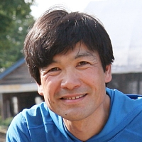
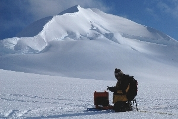

杉山慎
講師
地球圏科学専攻 雪氷・寒冷圏科学コース
sugishin_lowtem.hokudai.ac.jp (_のところに@を入れてください。)
Shin Sugiyama Home Page
こんな研究をしています
氷河を見たことがありますか？氷床という名前を聞いたことがあるでしょうか？ ヨーロッパアルプス、ヒマラヤ、パタゴニアなどの山岳地域に見られる氷河は、 地形をつくり、淡水を蓄え、また気候変動の指標として、重要な役割を果たしています。 また南極やグリーンランドを覆う巨大な氷床は、その変動が海水面変動や海洋の循環に 大きな影響を与え、地球規模の気候変動と強く結びついて います。世界各地での野外観測、 人工衛星データの解析、コンピュータを使っ た数値実験などを通じて、氷河・氷床の変動と そのメカニズムを理解すること が私たちの研究目標です。こんな学生を求めています
氷河・氷床に興味がある、優秀な、または優秀になりたい気持ちのある、学生さんを求めています。 氷河を見たことがなくても、地球科学の経験がなくても構いません。むしろ物理や数学の基礎学力を 持っている方、実験や装置開発の 経験のある方は大歓迎です。氷河観測、人工衛星データの解析、 数値実験などが研究手法の中心です。、野外や海外での生活、英語、コンピュータなどが得意だと いいですね。もちろん元気と根気強さがあれば、テント暮らしやプログラミングの経験がなくても 問題ありません。
研究テーマ
いつでも氷河へ観測に行ける訳ではないので、プロジェクトの有無によって選 べる研究テーマは限られます。すでにやりたいことが決まっていても（例えば 南極で観測したい、など）、その課題に取り組めるかどうかはわかりません。 氷河・氷床の研究という枠の中で、様々な課題に柔軟に取り組んで欲しいと希 望しています。これまでに取り組んできた研究プロジェクト、研究課題は こちらで見ていただけます。氷河観測のようすに興味がある方は こちらから写真を覗いてみてください。指導方針
研究課題やその解決方法を相談し、進捗を確認しながら研究を進めたいと考え ています。本人の能力や性格に応じて、ちょうど良い程度の指導が できたら理想的です。野外観測や数値計算が始められるよう準備しますので、 そこからは自分で勉強と工夫をする努力をして欲しいと希望しています。修了後の進路
氷河の知識を直接活かせる職業は限られています。しかし、研究を通じて身に つけた科学知識、観測技術、発表手法、海外経験や語学力などは、広く社会で 活躍する良い素養になります。そのようなユニークな能力を活かして、一般企 業での技術研究、環境行政、環境コンサルタント、教育などの分野で活躍を目 指して欲しいと思います。もちろん、世界の大学や研究機関で活躍する 研究者が育つことも期待しています。過去の博士課程研究テーマ
- Frontal ablation of Glacier Perito Moreno, a lake terminating glacier in Patagonia
(パタゴニア氷原ペリート・モレノ氷河における末端消耗)
-
箕輪 昌紘 (2017)
- Ice front variations and velocity changes of calving glaciers in the Southern Patagonia Icefield and northwestern Greenland
(南パタゴニア氷原およびグリーンランド北西部におけるカービング氷河の末端変動と流動変化)
-
榊原 大貴 (2016)
- Variations in the terminus position, ice velocity and surface elevation of the Langhovde Glacier, East Antarctica
(東南極ラングホブデ氷河の末端位置・流動速度・表面標高の変動)
-
福田 武博 (2014)
- Changes in ice flow regime due to proglacial lake formation in an alpine glacier
(氷河前縁湖の形成に起因する山岳氷河の流動変化)
-
津滝 俊 (2011)
過去の修士課程研究テーマ
- グリーンランド北西部カナック氷帽における融解水の流出
-
近藤 研 (2020)
- ロシア・カムチャッカ半島における2000年以降の氷河表面標高変化
-
福本 峻吾 (2020)
- グリーンランド北西部ボードインフィヨルドにおける水温・塩分・流速の季節変動
-
藤支 良貴 (2020)
- 南パタゴニア氷原Pio XI氷河における近年の末端前進とそのメカニズム
-
波多 俊太郎 (2019)
- 東南極Langhovde氷河の末端変動と棚氷下海洋環境
-
山根 志織 (2019)
- グリーンランド北西部Bowdoin氷河における末端位置の変動と海底地形の関係
-
浅地 泉 (2018)
- 南パタゴニア氷原グレイ氷河における近年の末端変動とそのメカニズム
-
山本 淳博 (2018)
- ネパールヒマラヤ・トランバウ氷河における1980–2016年の表面標高変化
-
森本 直矢 (2017)
- グリーンランド北西部における氷床から海洋への融解水流出
-
松野 智 (2016)
- グリーンランド北西部におけるカービング氷河の表面標高変化
-
片山 直紀 (2016)
- グリーンランド北西部における高濁度海水域の変動
-
大橋 良彦 (2015)
- グリーンランド北西部における氷帽の表面高度変化
-
斉藤 潤 (2015)
- グリーンランド北西部カナック氷帽における表面高度変化, 質量収支, 流動速度
-
丸山 未妃呂 (2015)
- 南パタゴニア氷原ペリート・モレノ氷河とアメギノ氷河の末端変動と表面標高変化
-
箕輪 昌紘 (2014)
- 南パタゴニア氷原におけるカービング氷河の末端変動と流動変化
-
榊原 大貴 (2013)
- ネパールヒマラヤ・ヤラ氷河における近年の氷厚および流動変化
-
刀根 賢太 (2011)
- A numerical glacier flow model for dating an ice core drilled at Aurora Peak, Alaska
(氷河流動モデルによるアラスカ・オーロラピーク氷コアの年代決定)
-
福田 武博 (2010)
- スイス・ローヌ氷河末端部における表面融解量の空間分布
-
吉澤 猛 (2010)
- Changes in surface flow speed over the past 100 years, Rhonegletscher, Swiss Alps
(スイスアルプス・ローヌ氷河における過去100年の表面流動速度変化)
-
西村 大輔 (2008)